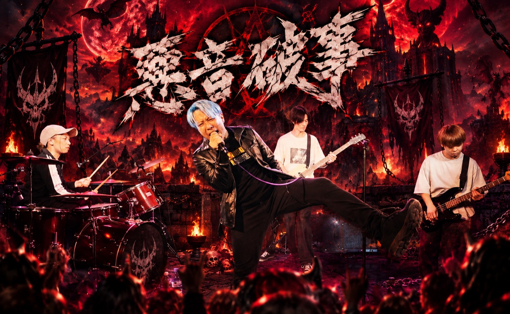

魔界と地球をつなぐ、魔神お気に入りの電波

アオハジ
AOHAZI
地球にお忍びで訪れていた魔神が、たまたま発見したロックバンド。
魔神はルミネへ行くついでにライブハウスへ立ち寄ることがあり、その時に出会ったのがアオハジだった。
あまりの格好良さに一撃で魔神のハートを撃ち抜き、以来魔神お気に入りのバンドとして認定されている。
そして実は、この魔界ダンジョンに流れているBGMも、すべてアオハジが提供している。魔神と戦っている間、あなたが聴いているその音も、もとは彼らの曲なのだ。
今夜も魔神は、地球のライブハウスへ出張中。
次にどんなバンドを発見してくるかは、誰にも分からない。